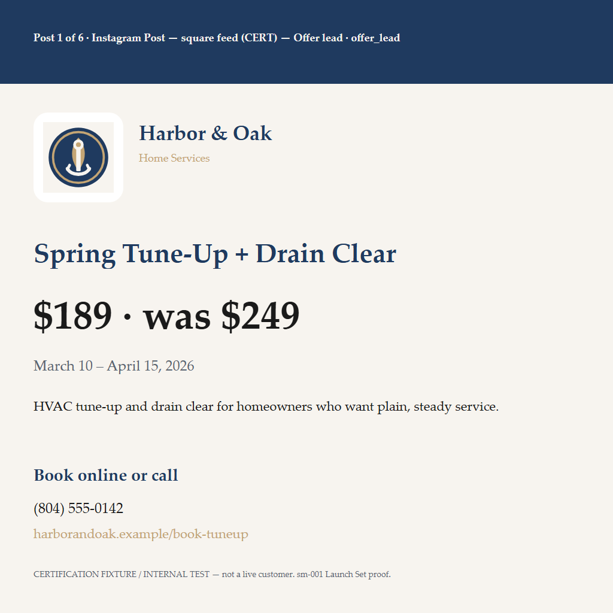
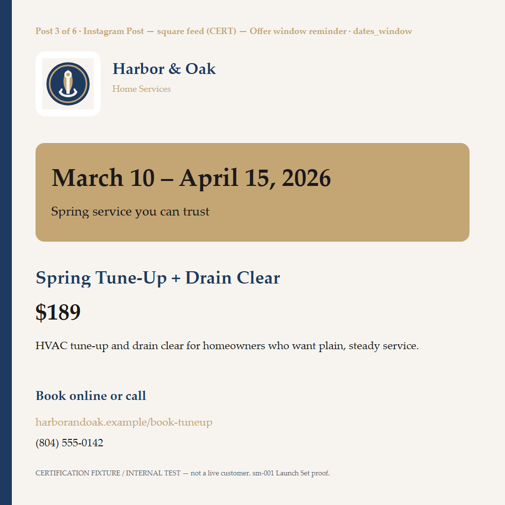

Grade the six posts as one campaign: coherence, variety without clones, whether Posts 5–6 genuinely extend the set, hierarchy, weak members, and whether six feels intentional rather than padded. Technical proof is already PASS — this page is for Owner/Manager visual review only.

